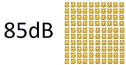

Selected Hobby Studies

"Venus is not Earth’s closest neighbor"
Physics Today. This will forever be the most popular thing I ever make, and it's just some goofy math that made waves.

"Using my engineer powers for the good of human kind."
How loud would it be if every cat in the world meowed at the same time? Not very. More of a "did the math" kinda thing, but imgur liked it.
Selected Professional Studies

"Development and Performance Testing of a Nuclear Material Testbed Digital Twin"
Los Alamos National Laboratory
"In-Situ High-Energy X-ray Diffraction During a Linear Deposition of 308 Stainless Steel via Wire Arc Additive Manufacture"
Los Alamos National Laboratory
"A 3D Finite Difference Thermal Model Tailored for Additive Manufacturing"
University of Alabama in Huntsville
"Stainless Steel 304L LENS AM Process Monitoring Using In-Situ Pyrometer Data"
Los Alamos National Laboratory
"Summary Report for the Technical Interchange Meeting on Development of Baseline Material Properties and Design Guidelines for In-Space Manufacturing Activities"
National Aeronautics and Space Administration
"Predictors of Difficult Ultrasound-Guided Transversus Abdominis Plane Blocks"
University of Mississippi Medical Center
"Thermal Control of the Friction Stir Welding Process"
Mississippi State University